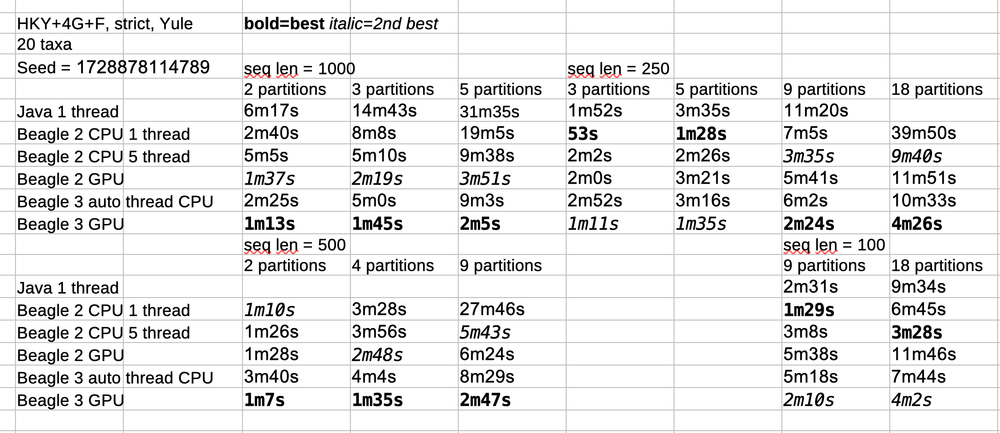

Beagle in BEAST 2.7
Beagle
- Library for efficient tree likelihood calculation
- API to Java
- Implementations for CPU, SSE, GPU, ...
- Main gain from:
- Matrix exponentiation
- Partial calculation
- Scaling
- Integration over categories
- Root frequencies amalgamation
- Set up instances
- More...(not relevant for BEAST 2.7
Single partition tree likelihood calculation (image credit Paul O Lewis)

Single partition tree likelihood calculation
|
|
|
Calling the Beagle API
- (java) BEAST TreeLikelihood calls
- (java) Beagle TreeLikelood calls
- (java) Beagle JNI wrapper calls <= expensive
- (cpp) JNI implementation calls
- (cpp) Beagle instance calls <= expensive
- (cpp) GPU implementation
API designed to minimise the number of API calls!
Multi partition tree likelihood calculation (image credit Paul O Lewis)

MultiPartitionTreeLikelihood
Available in BEASTLabs (at the moment)
<distribution id="MultiPartitionTreeLikelihood" spec="beastlabs.evolution.likelihood.MultiPartitionTreeLikelihood”>
<!— (Threaded)TreeLikelihoods go here —>
</distribution>
MultiPartitionTreeLikelihood
EpochBeagleTreeLikelihood
- Split time into different epochs, each with their own substitution model
- Where a branch crosses an epoch boundary, get transition probability matrix by multiplying matrices over appropriate time frame
- Tell Beagle Eigenvalues/vectors for branches NOT crossing any epoch boundaries
- Tell Beagle Transition probability matrices for branches crossing boundaries
- Partial calculation, scaling, amalgamation remains as is
EpochBeagleTreeLikelihood
2 epochs
Next
- Automatic tree likelihood configuration
- CPU/GPU
- Multi/Single Partition
- Number of threads
- Integration in Beauti
- ..